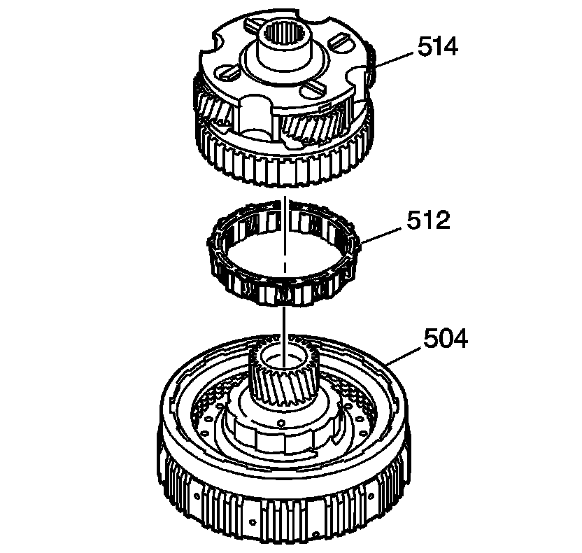
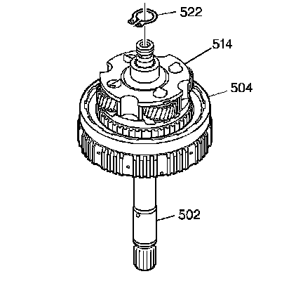

Overdrive Carrier Assemble
Overdrive Carrier Assemble

1. Install the overdrive clutch roller assembly (512) on the overrun clutch housing assembly (504).
Important: Rotate the overdrive carrier assembly (514) during installation in order to line up the overdrive clutch plates with the overdrive carrier assembly splines.
2. Install the overdrive carrier assembly (514) on the overrun clutch housing assembly (504).

Notice: Align the components carefully to avoid damaging the turbine shaft oil seal rings.
3. Install the turbine shaft (502) through the overrun clutch housing assembly (504) and the overdrive carrier assembly (514).
4. Install the overdrive carrier retainer ring (522).